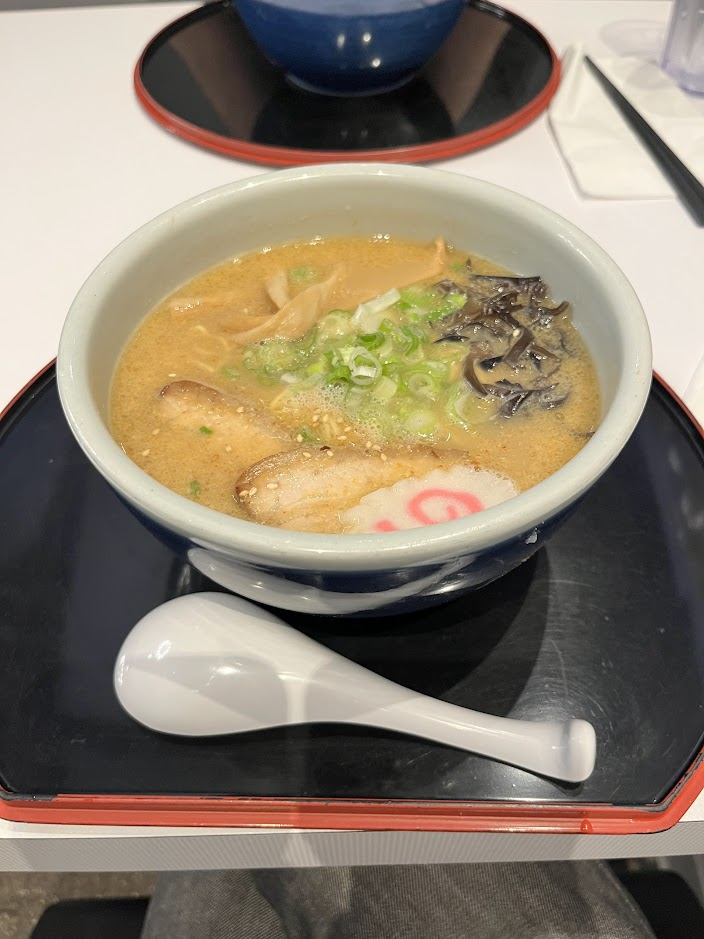

Hokkaido Ramen Santouka - Miso Ramen

- Price: $20
- Rating: 7/10
- Last date I had it : 2025-07-19
- Review: a pretty classic bowl of miso. I’m not knowledgeable on hokkaido ramen and reading online I’m still clueless, so my view might be biased here. anyway, it was a decent bowl: noods, soup, bamboo shoots all good. I’d have preferred softer and juicer chashu, a more miso-centric soup (was slighlty weak), and maybe fresher woodear mushrooms (felt a bit bland). That being said, I think the quality of this for being in america is better than I expected (especially for a chain restaurant), and I overall enjoyed it. Definitely a great starter for anyone wanting to eat more traditional ramen.